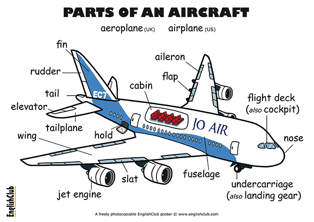

| managed to do 只存在于过去，同was able to | can/could 只有2个时态 | be able to 可变换多时态 |
|---|---|---|
| 过去想方设法做，且也做到了,主动的带着强烈意愿的去做。 | could 只能表达过去有能力做，can 可以表推测，允许。 | was/were able to 有能力做并成功做到了，be able to 主要配合多时态的使用 |
| The officer in the control tower | was very angry | when he heard the news, | because balloons can be a great danger to aircraft. |
| 军官在控制塔内 | 很生气 | 当他听到这个消息的时候 | 因为气球对飞机来说是一个巨大的危险。 |
| 主语 + 系动词 + 表语 | 时间状语从句 | 原因状语从句 | |
| keep track of 跟踪，追踪 | lose track of 失去联系 |
|---|---|
|
|
| make for 导致、前往... | make out 弄清楚... |
|---|---|
| He escaped prison, and was making for the coast. 他逃离了监狱，正向海边走去。 | I couldn't make out what she was saying. 我听不清她在说什么。 |

| make out | 写出，填写（相当于 write out） | He made out a cheque of 1,000 dollars and gave it to the secretary. |
|---|---|---|
| （勉强）看出，辨认出，听出，理解 |
|
|
| make up | 编造，捏造，虚构 |
|
| （给…）化妆/化装 |
|
|
| make up for | 补偿，弥补 |
|
| make for | （匆匆）走向，向…前进 | While the thief was making for his car, a policeman stopped him. |